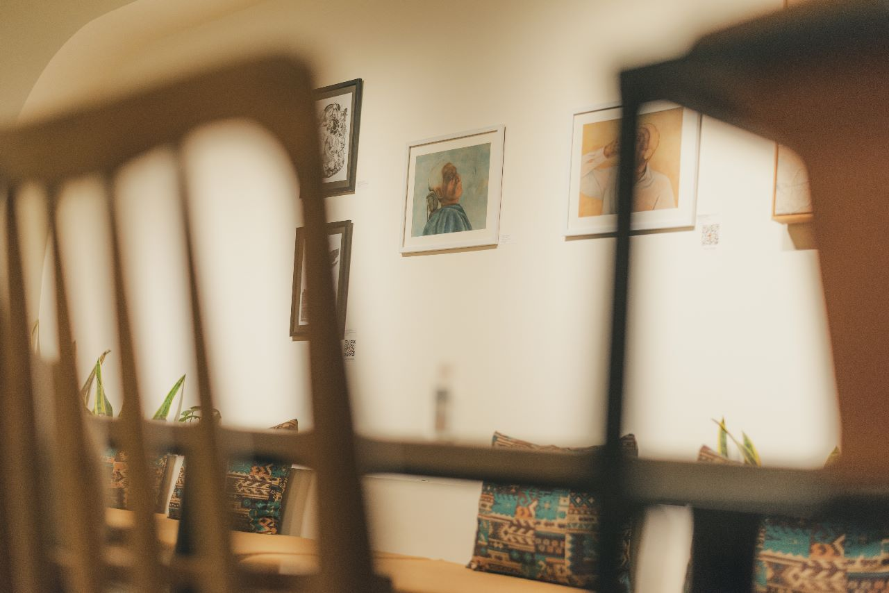

About Us
Koosh-lee
A feeling of deep contentment, provided by a person, place or atmosphere; experiencing happiness and personal well-being through a combination of nature, companionship and coziness.



Koselig Cafe is one of the best The culture of Art Cafes has richly brewed the blend of artisanal coffee with artistic minds for centuries. Coffee houses have been thriving places that serve and satiate people’s taste buds along with their thoughts. We at ‘Koselig’ aspire to dwell you into artistic experiences along with relishing the aromatic coffees.


Try Speciality
Mushroom Cappuccino
Hot Burrata
Pasta Puttanesca